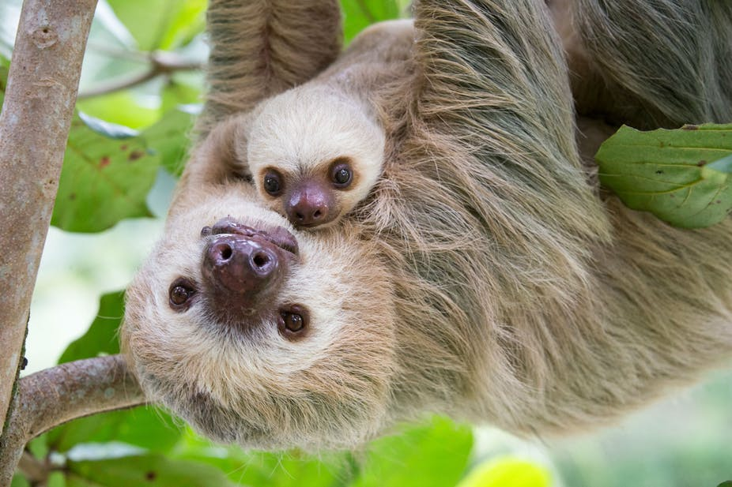

1. The sloth is the world's slowest mammal, so sedentary that algae grows on its furry coat.
2. Sloths are identified by the number of long, prominent claws that they have on each front foot. There are both two-toed and three-toed sloths.
3. There are four living species of three-toed sloths; these are the brown-throated sloth, the maned sloth, the pale-throated sloth, and the pygmy three-toed sloth which was only recognised as a distinct species in 2001.
